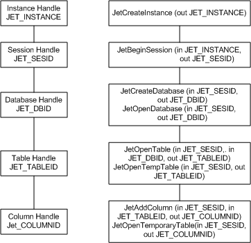

Applies to: Windows | Windows Server
ESE handles are used to create sessions and access databases. They are maintained in a hierarchy, which means that the output from one level is used to access resources at the next level.
The diagram here shows the hierarchy of handles and the corresponding functions that create the handles. Also indicated along with the functions are the handles that are used in the call to create the new handle.

As shown in the diagram, the instance is the root handle and the level at which the database is recovered in the event of an unexpected process termination or system shutdown. The instance handle, JET_INSTANCE, is created by JetCreateInstance and JetCreateInstance2. The next level, the session level, is the transaction context of the database engine and the level under which all database operations are performed. The session handle, JET_SESID, is created in the context of the instance in the call to JetBeginSession. The session ID is used in all subsequent calls to access tables and databases. If the instance is being used by more than one thread at a time then each thread must use its own session handle. The database handle is created using the session handle and primarily used to manage the schema of the database, but it can also be used to manage tables inside the database. Database handles can only be used in the session under which they are created. The handle to the database is created in the call to JetCreateDatabase or JetOpenDatabase. Tables are associated with the database ID under which they are created.
The JET_TABLEID data type contains a handle to a database cursor. It is used to scan records, search records or create update and delete records. The table handle is created in the call to JetOpenTable, or JetCreateTable. JetOpenTempTable, JetOpenTempTable2, and JetOpenTempTable3 also create table IDs for temporary tables, and JetCreateTableColumnIndex and JetCreateTableColumnIndex2 return table IDs in the out structure. The columns created within the table each have a unique column identifier or COLUMN_ID. The columns IDs are created in the calls to JetAddColumn, or in calls to JetOpenTempTable, JetOpenTempTable2, or JetOpenTempTable3 for temporary tables. Column IDs may also be retrieved for a given column by name with APIs such as JetGetTableColumnInfo.